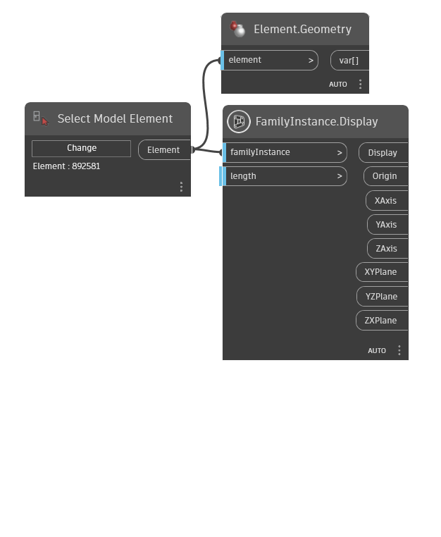
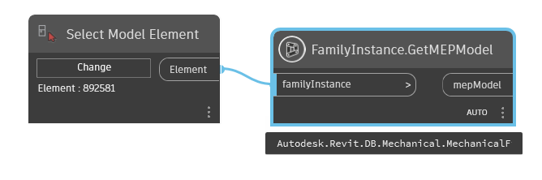

Class FamilyInstance
- Namespace
- OpenMEPRevit.Element
- Assembly
- OpenMEPRevit.dll
This object represents a single instance of a family type, such as a single I beam.
public class FamilyInstance- Inheritance
-
FamilyInstance
- Inherited Members
Remarks
Examples of FamilyInstance objects within Autodesk Revit are Beams, Columns, Braces and Desks. The FamilyInstance object provides more detailed properties that enable the type of the family instance to be changed, thus changing their appearance within the project.
Methods
Display(Element, double)
Shows scalable lines representing the CoordinateSystem of family instance axes and rectangles for the planes
[MultiReturn(new string[] { "Display", "Origin", "XAxis", "YAxis", "ZAxis", "XYPlane", "YZPlane", "ZXPlane" })]
public static Dictionary<string, object?> Display(Element familyInstance, double length = 1000)Parameters
familyInstanceElementthe family instance
lengthdoubledouble
Returns
- Dictionary<string, object>
GeometryColor
Examples

GetMEPModel(Element)
Retrieves the MEP model for the family instance.
public static MEPModel? GetMEPModel(Element familyInstance)Parameters
familyInstanceElementthe element to get MepModel
Returns
- MEPModel
Autodesk.Revit.DB.MEPModel
Examples

Remarks
If the family instance has a MEP model it is returned by this method, otherwise null is returned. Different types of MEP model will be returned based on the type of the instance, for example - if the instance is a lighting device then a lighting device model will be returned. This property will only function with the Autodesk Revit MEP product.